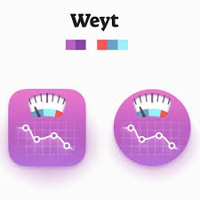

MediSyn is a cutting-edge platform designed to revolutionize maternal healthcare by seamlessly integrating centralized pregnancy tracking, AI-driven insights, and secure digital services. It empowers new and expecting mothers with personalized symptom monitoring, educational guidance, and timely alerts—ensuring a safe, informed, and stress-free pregnancy journey from conception through the postpartum period.

Medisyn
At Medisyn, we blend cutting-edge technology with compassionate care to support you through every step of your pregnancy journey. Our intelligent symptom tracker is designed especially for new and expecting mothers—helping you log and interpret vital signs, emotional changes, and baby’s development with confidence. From personalized insights and evidence-based guidance to timely alerts


01
Advanced Support: Aarohi is our intelligent pregnancy care chatbot,
trained to understand over 130 maternal and neonatal symptoms to accurately detect
early signs of more than 40 pregnancy-related conditions.
Comprehensive Analysis: With a vast maternal health symptom database,
Aarohi can identify subtle patterns and correlations
that may be overlooked in traditional pregnancy assessments—
ensuring early detection and proactive care for both mother and baby.
Empowering Decisions: Aarohi provides expecting mothers and healthcare professionals with reliable insights and early warning signs—
empowering them to make informed decisions for timely intervention and personalized care during pregnancy and postpartum recovery.
Complementing Healthcare: Aarohi transforms the pregnancy journey into a stress-free, supportive experience.
From daily symptom tracking to emotional well-being check-ins, it bridges the gap between home care and clinical expertise—
perfectly complementing traditional healthcare systems with AI-driven, compassionate guidance.
MediSyn & its services.

Improving Hospital Visits
MatraSwasthya streamlines maternity care with easy appointment booking, smart scheduling, and instant virtual consultations—
ensuring timely support for every mother.

Authentication & inventory
MatraSwasthya ensures secure access and real-time inventory management through digital authentication and automated tracking.

Centralized &
AI Support
Matraswathya integrates hospital departments and patient records into a single, unified platform for seamless operations.
Aarohi
Aarohi is an advanced machine learning model designed to revolutionize maternal healthcare.
View details »MatraSwasthya
MatraSwasthya is a patient-centric portal that provides convenient access to healthcare services.
View details »

Weight Analyzer
Weight Analyzer helps you track and analyze your weight during pregnancy for better health insights.
View details »Introducing
Aarohi
Aarohi is an advanced AI-powered chatbot designed to revolutionize pregnancy tracking. With its ability to monitor and analyze various pregnancy-related symptoms, Aarohi assists expecting mothers in tracking their health, providing personalized advice, and ensuring a safe pregnancy journey. Whether it's offering reminders for prenatal care or helping detect potential issues early, Aarohi is your reliable companion throughout the pregnancy process. Its precision, empathy, and efficiency make it an invaluable tool for both mothers and healthcare providers.
Introducing
MatraSwasthya
MatraSwasthya is a patient-centric portal that provides convenient access to healthcare services. It allows patients to book appointments, manage medications, view medical records, and communicate with healthcare providers. MatraSwasthya empowers patients to take control of their health journey and improve their overall healthcare experience.